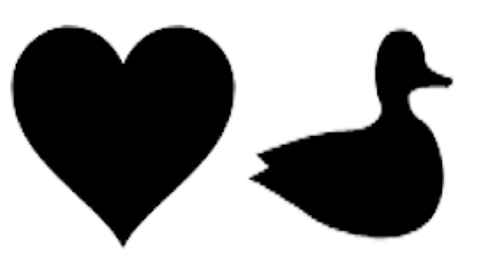

Note
Go to the end to download the full example code.
Debiased Sinkhorn barycenter demo
This example illustrates the computation of the debiased Sinkhorn barycenter as proposed in [37].
# Author: Hicham Janati <hicham.janati100@gmail.com>
#
# License: MIT License
# sphinx_gallery_thumbnail_number = 3
import os
from pathlib import Path
import numpy as np
import matplotlib.pyplot as plt
import ot
from ot.bregman import (
barycenter,
barycenter_debiased,
convolutional_barycenter2d,
convolutional_barycenter2d_debiased,
)
Debiased barycenter of 1D Gaussians
n = 100 # nb bins
# bin positions
x = np.arange(n, dtype=np.float64)
# Gaussian distributions
a1 = ot.datasets.make_1D_gauss(n, m=20, s=5) # m= mean, s= std
a2 = ot.datasets.make_1D_gauss(n, m=60, s=8)
# creating matrix A containing all distributions
A = np.vstack((a1, a2)).T
n_distributions = A.shape[1]
# loss matrix + normalization
M = ot.utils.dist0(n)
M /= M.max()
alpha = 0.2 # 0<=alpha<=1
weights = np.array([1 - alpha, alpha])
epsilons = [5e-3, 1e-2, 5e-2]
bars = [barycenter(A, M, reg, weights) for reg in epsilons]
bars_debiased = [barycenter_debiased(A, M, reg, weights) for reg in epsilons]
labels = ["Sinkhorn barycenter", "Debiased barycenter"]
colors = ["indianred", "gold"]
f, axes = plt.subplots(
1, len(epsilons), tight_layout=True, sharey=True, figsize=(12, 4), num=1
)
for ax, eps, bar, bar_debiased in zip(axes, epsilons, bars, bars_debiased):
ax.plot(A[:, 0], color="k", ls="--", label="Input data", alpha=0.3)
ax.plot(A[:, 1], color="k", ls="--", alpha=0.3)
for data, label, color in zip([bar, bar_debiased], labels, colors):
ax.plot(data, color=color, label=label, lw=2)
ax.set_title(r"$\varepsilon = %.3f$" % eps)
plt.legend()
plt.show()
Debiased barycenter of 2D images
this_file = os.path.realpath("__file__")
data_path = os.path.join(Path(this_file).parent.parent.parent, "data")
f1 = 1 - plt.imread(os.path.join(data_path, "heart.png"))[:, :, 2]
f2 = 1 - plt.imread(os.path.join(data_path, "duck.png"))[:, :, 2]
A = np.asarray([f1, f2]) + 1e-2
A /= A.sum(axis=(1, 2))[:, None, None]
Display the input images
Barycenter computation and visualization
bars_sinkhorn, bars_debiased = [], []
epsilons = [5e-3, 7e-3, 1e-2]
for eps in epsilons:
bar = convolutional_barycenter2d(A, eps)
bar_debiased, log = convolutional_barycenter2d_debiased(A, eps, log=True)
bars_sinkhorn.append(bar)
bars_debiased.append(bar_debiased)
titles = ["Sinkhorn", "Debiased"]
all_bars = [bars_sinkhorn, bars_debiased]
fig, axes = plt.subplots(2, 3, figsize=(8, 6), num=3)
for jj, (method, ax_row, bars) in enumerate(zip(titles, axes, all_bars)):
for ii, (ax, img, eps) in enumerate(zip(ax_row, bars, epsilons)):
ax.imshow(img, cmap="Greys")
if jj == 0:
ax.set_title(r"$\varepsilon = %.3f$" % eps, fontsize=13)
ax.set_xticks([])
ax.set_yticks([])
ax.spines["top"].set_visible(False)
ax.spines["right"].set_visible(False)
ax.spines["bottom"].set_visible(False)
ax.spines["left"].set_visible(False)
if ii == 0:
ax.set_ylabel(method, fontsize=15)
fig.tight_layout()
plt.show()
Total running time of the script: (0 minutes 31.148 seconds)